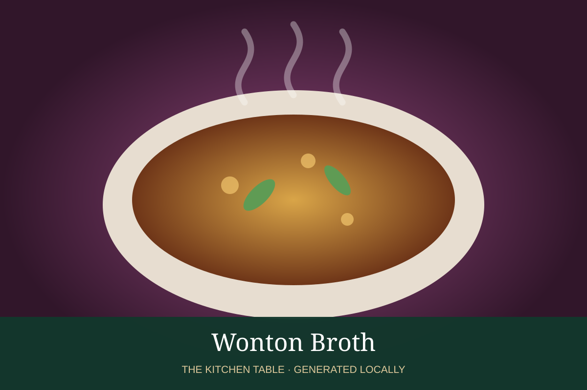

← Back to all recipes
BROTH & STOCK · CHINESE
Wonton Broth
Light, savory broth seasoned for wontons with chicken stock, ginger, scallion, and white pepper.
Broth & StockChinese

Ingredients
- 6 cups chicken or superior stock
- 4 slices ginger
- 3 scallions
- 1 tbsp light soy sauce
- 1 tsp sesame oil
- White pepper
- Salt
Preparation
- Simmer stock with ginger and scallion 10 minutes.
- Remove aromatics.
- Season lightly with soy, sesame oil, white pepper, and salt.
- Ladle over freshly cooked wontons.
Related Recipes
Chinese Superior Stock → · Chicken Broth → · Ramen Chicken Broth →